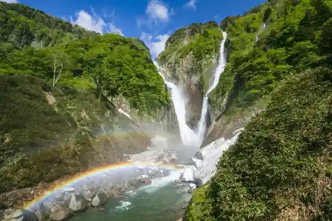
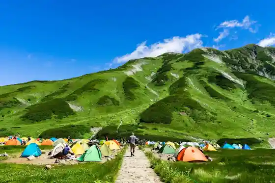
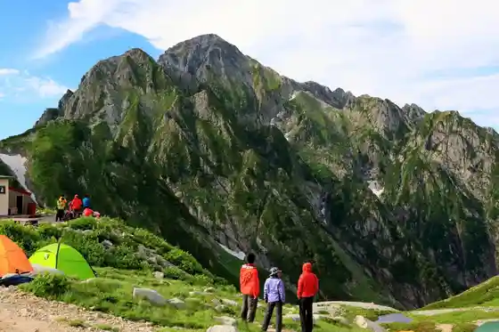

Shomyo Taki
Tateyama, Toyama · 076-462-9971 · Official / source link

Raichosawa Campground
Tateyama, Toyama · 090-1632-9141 · Official / source link

Mikuriga Ike
Tateyama, Toyama · 076-462-9971 · Official / source link
Tsurugi Sawa Campground
Tateyama, Toyama · 090-1632-9140 · Official / source link

Kurobe Dam
Tateyama, Toyama · 0261-22-0804 · Official / source link
Tateyama Kurobe Yuki no Otani Festival
Tateyama, Toyama · 076-481-1500 · Official / source link
Midagahara
Tateyama, Toyama · Official / source link
Mikuriga Ike Onsen
Tateyama, Toyama · 076-463-1441 · Official / source link
Tateyama Kurobe Arupenruto
Tateyama, Toyama · 076-481-1500 · Official / source link
Tateyama Shitsudo Sanso
Tateyama, Toyama · 076-462-9971 · Official / source link
Sasara Ya Tateyama Main Shop
Tateyama, Toyama · 076-463-6011 · Official / source link
[ Tateyama Museum ] Tenjikan / Haruka Bo Kan / Mandara Yu En
Tateyama, Toyama · 076-481-1216 · Official / source link
Bijo Taira
Tateyama, Toyama · Official / source link
Sushi Tokoro Ita Hashi
Tateyama, Toyama · 076-462-7887 · Official / source link
Oyama Shrine Ashi Kura Chugu Kigan Dono
Tateyama, Toyama · 076-482-1545 · Official / source link
Tateyama Ashi Kura Furusato Koryu Kan Mandara Shokudo
Tateyama, Toyama · 090-8269-9241 · Official / source link
Tateyama Green Park Yoshimine
Tateyama, Toyama · 076-483-2828 · Official / source link
Toyamaken Tateyama Karudera Sabo Museum
Tateyama, Toyama · 076-481-1160 · Official / source link
Sen Yama
Tateyama, Toyama · 076-462-9971 · Official / source link
Tateyama Arupen Village
Tateyama, Toyama · 076-483-2955 · Official / source link
Healthian-Wood
Tateyama, Toyama · 076-482-2536 · Official / source link
Tateyama Nature Hogo Center
Tateyama, Toyama · 076-463-5401 · Official / source link
Joganjigawa no Seiryu
Tateyama, Toyama · 076-462-9963 · Official / source link
Kurobe Taira
Tateyama, Toyama · 076-463-5401 · Official / source link
Onigiri no Shitaka
Tateyama, Toyama · 076-482-1511 · Official / source link
Toyamaken Joganjigawa Park
Tateyama, Toyama · 076-463-2034 · Official / source link
Taikan Mine Nature Park
Tateyama, Toyama · 076-462-9971 · Official / source link
Iwamuro Falls
Tateyama, Toyama · 076-462-9971 · Official / source link
Etchu to Village to no Kan
Tateyama, Toyama · 076-462-3929 · Official / source link
Toi Tei Naya
Tateyama, Toyama · 080-5883-9497 · Official / source link
Midagahara Hotel
Tateyama, Toyama · 076-442-2222 · Official / source link
Tateyama no Yamazaki Kenkoku
Tateyama, Toyama · 076-462-9971 · Official / source link
Tateyama Genki Koryu Suteshon
Tateyama, Toyama · 076-463-0001 · Official / source link
Tateyama Nature Fureai Kan (Konchu Okoku Tateyama)
Tateyama, Toyama · 076-462-8555 · Official / source link
Aku Shiro no Kabe
Tateyama, Toyama · 076-462-9971 · Official / source link
Noji Kumiai Hojin Tateyama Eino Kumiai
Tateyama, Toyama · 076-462-2151 · Official / source link
Tateyama Sangaku Sukii
Tateyama, Toyama · 076-444-3398 · Official / source link
TATEYAMA SAUNA
Tateyama, Toyama · 090-9443-7819 · Official / source link
Han no Ki Taki
Tateyama, Toyama · 076-462-9971 · Official / source link
LOCOMOTION COFFEE AND BED
Tateyama, Toyama · 076-456-4680 · Official / source link
Guriimbyu Tateyama
Tateyama, Toyama · 076-482-1716 · Official / source link
Shitsudo Hotel Tateyama (Teiiraunji Rindo)
Tateyama, Toyama · 076-463-3345 · Official / source link
Otsuji Yama
Tateyama, Toyama · 076-462-9971 · Official / source link
Momberu Tateyama Besukyanpu Bijita Center
Tateyama, Toyama · 076-413-3511 · Official / source link
Chukaryori Daisangen
Tateyama, Toyama · 076-463-5318 · Official / source link
Soba Tokoro Okina
Tateyama, Toyama · 076-463-0880 · Official / source link
Tateyama Tourism Association
Tateyama, Toyama · 076-462-1001 · Official / source link
Green Park Yoshimine (O Shokuji Tokoro Yoshimine)
Tateyama, Toyama · 076-483-2828 · Official / source link
National Tateyama Seishonen Nature no Ie Campground
Tateyama, Toyama · 076-481-1321 · Official / source link
Rai Hai Yama
Tateyama, Toyama · 076-462-9971 · Official / source link
Tateyama Rekishi Koryu Suteshon (Nichi Nata)
Tateyama, Toyama · 076-462-2387 · Official / source link
Kashibesso Donguri
Tateyama, Toyama · 090-9443-7819 · Official / source link
to Kurayama
Tateyama, Toyama · 076-462-9971 · Official / source link
Taniguchi Shu Gakko
Tateyama, Toyama · 076-464-3889 · Official / source link
Te Hineri Experience, Etsuke Ke Experience (to no Kan)
Tateyama, Toyama · 076-462-3929 · Official / source link
Chigo Tsuka Burial Mound
Tateyama, Toyama · 076-462-9983 · Official / source link
no no Ie
Tateyama, Toyama · 076-464-3130 · Official / source link
Toi Tei Omoya
Tateyama, Toyama · 080-5883-9497 · Official / source link
Kafe Do Manderin
Tateyama, Toyama · 076-462-3788 · Official / source link
Kyu Shima Ie House
Tateyama, Toyama · 076-481-1216 · Official / source link
Arupen Village Tourist Farm Ichigo Hausu
Tateyama, Toyama · 076-483-2987 · Official / source link
Tateyama Town Hall
Tateyama, Toyama · 076-463-1121 · Official / source link